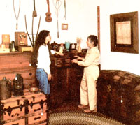
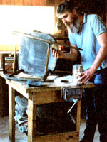
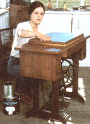
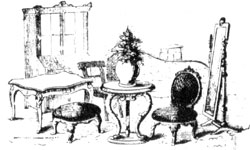

For the past five years, our two-person family has enjoyed the good life. We own a fine old farmhouse on three beautiful country acres, and we have secure, satisfying, rewarding jobs with the greatest employers in the world . . . ourselves.
But it wasn't always that way. Our current lifestyle wasn't served up to us on a silver platter, and success in business didn't come about overnight. We worked long and hard for both.
When we were first married, we punched time clocks. And though our employers sometimes seemed to be getting rich from our efforts, we certainly weren't. Consequently, the only way we could afford to equip our house with the fine old furniture we both loved was by haunting flea markets and garage sales in search of dirt-cheap (but sound) used furniture, then refinishing it ourselves. We found that we enjoyed working with wood, and as a result we put our best efforts into it-but we were still surprised when our friends not only complimented us on our work, but began asking us to refinish their prized pieces of furniture.
We did . . . and that's when our future began falling into place: Our friends told their friends, who passed the word on to othersand before we knew it, what had been an avocation brought about by necessity had transformed itself into a vocation of choice. (It seems that just about everyone has a few pieces of furniture in need of refinishing.) After a while, we were able to give up our jobs and keep ourselves busy (and solvent) working out of our own home, doing labor we enjoyed and (as we slowly began to realize) were good at.
So far, we've earned all or part of our income from refinishing furniture in Indiana, Florida, and the Carolinas, and in each of' those locations, demand for this service has exceeded the supply of good local refinishers. (Notice we said good refinishers; more on that in a moment.) And from what we've seen, a similar seller's market exists in just about every part of the country.
What can you reasonably expect to earn as a full-time refinisher? Well, you won't get rich quick-but neither will you or yours go hungry. Our first year, working an average of 60 hours a week between us, we netted about $15,000. That was five years ago, so it's not unreasonable to say that in today's economy a novice refinisher who's willing to work hard to deliver a quality service for a fair price should be able to match or even better our combined $15,000 the first year out. Once you've established yourself as a first-rate refinisher, there's really no limit to what you can earn from this business. We know of refinishers who are netting $35,000 a year and more . . . but they're very good at what they do. They earn their income.
If furniture refinishing sounds like it might be your ticket to financial independence, stay tuned and we'll reveal some important secrets of the trade.
Furniture refinishing requires only a minimal start-up investment. (We started with no investment.) If you can put together the following list of essentials, you're ready to give this home business a trial run.
Work space: As strange as it may sound, our experience indicates that you may actually be better of operating a refinishing shop out of your home than you would be renting a Main Street storefront. Our customers seem to be able to relax in our home-shop atmosphere-they enjoy strolling through our work and sales areas and examining the various pieces in different stages of completion. And we think there's something about a home-based business that engenders trust. What's more, working out of your home cuts overhead, allowing you to offer lower rates while simultaneously increasing profits. (And don't forget that you can deduct all expenses for the percentage of your home that's used solely for business purposes.)
Our work area consists of a single garage and an enclosed porch attached to the back of our house. In warm weather, we can open the garage door and a couple of small windows to provide flow-through fresh air. (Aside from adequate size, the most important workspace consideration is ventilation. For the sake of your health, and to assure that the finishes you apply will dry quickly and thoroughly, proper ventilation is mandatory.) The enclosed porch has an entire wall of southfacing windows, which provide excellent ventilation as well as superb natural lighting.
Most strippers (the common name for paint and varnish removers) and finishes perform best when used at temperatures that a human would consider reasonably comfortable (60 to 80°F or thereabouts). In winter we heat with a small woodstove-which is efficient enough to allow us to have at least a few windows open even on the coldest days.
Lighting is also very important. Indirect sunlight is ideal, but if your work space is short on natural illumination, fluorescent lighting is the next best bet-it minimizes shadows and is more diffused than the harsh glare of incandescent bulbs.
Transportation: Pickup and delivery are part and parcel of the furniture-refinishing business, especially when you're getting started. We use a half-ton pickup truck, and have found that it provides ample room to haul all but the largest jobs in a single load. A van, while usually a bit more expensive to purchase and more costly to operate than a pickup, is also an excellent choice. Even a station wagon will do in a pinch. (Here again, all solely business-related expenses are deductible.)
Materials: Pay attention, now, because we're about to reveal the Number One Secret to success in the furniture-refinishing business: Use only the very best (and that generally means the most expensive) materials you can find, and apply them by hand.
Most large-scale refinishing shops are set up as production-line operations. Furniture is dipped in vats of harsh chemical stripper, then refinished with spray guns shooting (most often) lacquer. We grant that such a system is fast, but dipping is hard on furniture (it dries out the wood and weakens glued joints), and lacquer produces a fragile, unnaturally glossy finish. More than a few of the many refinishing shops that fail can trace their lack of success to just such an operation; savvy customers will use them once, but not a second time.
Not only will cheap materials and a production-line approach to refinishing often result in shoddy work, but a shop filled with fumes rising from an open vat of budget stripper (and others fogged into the air with a spray gun) isn't exactly conducive to good health and longevity.
In fact, furniture refinishing's reputation of being a stinky, unhealthful job largely arises from the use of cheap strippers. While a budget-priced paint remover can burn the hair out of your nose, the best strippers have far less odor. Moreover, by applying both strippers and finishes by hand-rather than spraying them into the air in large quantities-and by working in a well-ventilated space, you can all but eliminate odors and potentially harmful fumes. (As evidence of this, a neighboring refinisher who's been doing quality work for most of his adult life is now in his mid-70s and is still working and enjoying good health.)
Still, when selecting a stripper, don't necessarily go by price alone. While the more expensive brands are generally better, a more accurate indicator of quality (and toxicity) is flammability. (And remember that inflammable means exactly the same thing as flammable.) The best paint removers are nonflammable. If a product is flammable, the law requires that it be marked so on its container.
Although it's possible, it's not likely that you'll find top-quality, nonflammable strippers at your local discount house. Consult the most reputable lumberyard or paint store in your vicinity, try two or three of the brands the experts there recommend, and settle on the stripper that works best for you. (We've had excellent results with Klean Strip Old Finish Remover.) Once you make your choice, buying by the gallon will save you both money and trips to the paint store.
Finishes: Most of our customers are shocked when we tell them that we think the premier all-around furniture finish is polyurethane (we use the best that Du Pont markets) . . . until they see the results. Not only is polyurethane easy to apply (by brushing or rubbing on), but the satin and lowgloss varieties give fine furniture (including antiques) a natural-looking finish that's both tough and waterproof-meaning that your customers can place heavy, perspiring drink glasses on their tables without having to worry about the finish becoming scarred or water damaged. (Don't try that with a lacquer finish!)
Hand-rubbed tung oil is, in our opinion, first runner-up to polyurethane.
Stains: Stains can help highlight the texture and grain patterns of some woods. But, by and large, we prefer-and do our best to convince our customers-to leave most woods their natural color. (It's difficult to improve on nature.) But if and when you do choose to use a stain, price will, again, be a fairly accurate indicator of quality. (We use Minwax brand, which is a superb one-step stain and sealer.)
Brushes: You can't apply a first-class finish with a cheap, nylon-bristle brush. Buy only the finest natural-bristle brushes you can find. We use a new brush first for refinishing, then-after it's got some wear on it-demote it to the status of a stripper applicator. You'll rarely, if ever, need a brush that's more than 2-1/2 to 3 inches in width.
Scrapers: After stripper is applied, it must be scraped off: The best tool for the job is a metal scraper with rounded corners (to prevent the wood from being scratched).
Abrasives: You'll need silicon carbide paper (the black stuff that's most often called "wet or dry") in fine grits such as 200 and 400 . . . and steel wool-00 for stripping and 0000 for finishing. Avoid using power sanders on fine furniture.
Stripping: Never use sandpaper to remove an old finish; let a top-quality paint and varnish remover do the sanding chores for you . . . it'll save both time and energy, and the results will be far better. Apply the stripper generously, with a brush, to one surface at a time, with the piece turned so that the surface being stripped is positioned horizontally to prevent the stripper from dribbling off. After a few minutes-and without scraping off the first coat-apply a second coat of stripper to the same surface. Now examine joints, carved surfaces, and other hard-to-get-at places where old finishes and grime tend to build up; these areas may require a third coat of stripper, worked in with a toothbrush.
When you scrape off the stripper and old finish (we save coffee and juice cans to dump the gooey mess into for convenient disposal), always pull the scraper toward you-with the blade facing away from you-to avoid scratching the wood or gouging up a splinter. If there are areas that have resisted the stripper, apply yet another coat to those spots, allow the goo to work for a few minutes, then remove it with 00 steel wool.
After the stripped piece has had time to dry, go over it lightly with 00 steel wool, rubbing with the grain, without using an undue amount of pressure.
Sanding: After a piece is stripped, it should be allowed to dry at least overnight before a finish is applied. Additionally, because of the tendency of paint and varnish remover to raise the grain of some woods slightly, some items of furniture-especially those with large, flat surfaces-can benefit from a light sanding with number 220 garnet paper. But any time you pick up a piece of sandpaper, you're courting trouble-so remember, lightly is the word, and never use a rougher grade of paper than is absolutely necessary to get the job done.
Finishing: After a piece has been stripped and lightly buffed with fine steel wool, touch it only with clean hands, to prevent the dry, openpored wood from being stained. All finishing work should be performed in a dustfree environment (vacuum your finishing room daily, and allow time for the dust to settle before starting work). Dust the piece to be finished with a tack cloth, then apply the base coat (we generally use low-gloss polyurethane) with a natural-fiber brush.
The next day (or when the first coat has had time to dry according to the manufacturer's directions), wipe (don't sand) the piece lightly with number 400 silicon carbide paper. Any dust particles trapped in the finish will show up as white specks-remove them with a fingernail. Afterwards, wipe the piece lightly with 0000 steel wool, then go over the surface with a clean tack cloth.
This next step takes some practice, and few refinishers (even professionals) ever completely master the technique: We apply the second finish coat (usually high-gloss polyurethane) by rubbing, rather than brushing, it on. In order to make a rubbed finish work, you need superb lighting. Dampen a clean, soft, absorbent cloth (an old cotton T-shirt is perfect) with the finish, and rub on a thin coat, working with the grain of the wood. Now squat down and move around the piece until you find the angle and lighting combination that will highlight any missed or streaked spots. Keep rubbing until the surface radiates a soft, even glow.
And you're done . . . but it's a good idea to allow the piece to rest for a few days, so that the finish can toughen up before being subjected to the rigors of delivery and handling. (The first thing most customers will do is run their hands over a refinished piece to check for smoothness.)
How much should you charge? Experience will be the best teacher, but here are a few guidelines: First of all, figure out how much you'll need to make-gross, per hour-to cover your overhead, provide the benefits that come with most salaried jobs (such as health insurance and annual vacations), and pay yourself a satisfactory hourly wage.
With this per-hour figure in mind, and with the ability (which experience will hone) to make an accurate estimate of how long it will take you to do a particular job without rushing it, you have a starting point. Now add in the time and expense involved in pickup and delivery (unless the customer elects to take care of the "gopher" chores) and the cost of materials . . . and you have an estimate.
Of course, you can expect to miss as many as you hit at first, losing money on some jobs while making more than you'd figured on others. But that's all part of the game, and you'll soon be able to come up with accurate estimates almost at a glance.
It's wise to charge a relatively low hourly wage at first-both because you, as a business and craftsperson, are an unknown commodity, and because you'll be slow. Later, as your skill, speed, and reputation develop, you can slowly up the hourly ante without having to raise your estimates. For example, if you start out figuring you want to make, say, $5 an hour, and estimate charging $100 for a particular job at that hourly rate, somewhere down the line you'll reach a point where you can charge the same price for the same piece of work, and do every bit as good a job-or better-in less than half the time . . . thereby more than doubling your hourly wage without raising the price to the customer.
Many of the pieces you'll be asked to refinish will be in need of repair. Some jobs-such as disassembling, cleaning, and regluing loose joints-are neither difficult nor prohibitively time-consuming. But unless you're an accomplished woodworker equipped with a complete shop (including especially a lathe), you'll have to learn where to draw the line between reasonable repairs and restoration. In general, we recommend that you study a good furniture restoration book (there are plenty of them around) to be sure you know what you're getting into before agreeing to take on a restoration job. (We do some restoration, but not a lot.)
Refinishing leads naturally into a related but separate business: buying and selling (dealing) used furniture, especially antiques. If you're right for the job, you'll have-or will soon develop-a keen interest in varieties of wood and styles of furniture. And if the interest is there, it's only a matter of time before you'll become adept at distinguishing valuable furniture (even when it's disguised under several layers of garish pink paint) from junk.
Many of your customers will approach you with furniture to sell, trade for refinishing work, or even give away. By keeping your eyes open for good deals on potentially valuable pieces, then obtaining and refinishing those pieces and arranging them on your front porch or in a spare bedroom (we use both), you've just diversified into the field of dealing in fine used furniture. (Right now, we think of refinishing as the bread we can depend on to live, restoration as butter, and our antique business as honey to sweeten the deal.)
We realize that furniture refinishing-or, for that matter, self-employment-isn't for everyone. But there are few other home businesses that offer the advantages of extremely low start-up costs, good income, security (old-timers tell us that in the past, when times were hard and folks couldn't afford to buy new furniture, the refinishing business real ly boomed), the tremendous personal satisfaction of doing fine work with your hands, and lots of avenues for professional expansion.
If you're punching a time clock right now, all of this might sound like a dream. But we can tell you from experience that furniture refinishing can make dreams come true!
After you've set up a workshop and done enough refinishing to feel that your skills are marketable, try visiting the established competition and asking them for tips and even for work; it's one of the best ways to get your business rolling. That may sound strange, but we've found that the few really good refinishers in an area usually have more orders than they can handle and so aren't afraid of competition. Take along a few pieces that you've refinished, show them to the experts, and say that you'd be delighted to take on any jobs that they don't have time for. Of course, you can expect to get the least lucrative tasks while the established refinisher skims the cream off the top-but that's only fair (beggars can't be choosers), and those jobs will help you build a clientele. Also, established refinishers are often surprisingly quick to offer professional advice to those who show promise.
Don't mess with cheapskate customers who insist on talking your price down before giving you their work. A too low price mandates cheap materials and workmanship, and that's not the kind of reputation you want to build. Price your work fairly, never agree to take shortcuts to save a customer a few bucks or land a job, do nothing but first-rate work, and in due time you'll have all the business you can handle.
Painted furniture is much more difficult and time-consuming to strip than is wood finished with a clear substance. (In fact, the least profitable and most frustrating refinishing job you can take on-owing to its many curves and joints-is a small, painted chair.) Take that into account when you're making your bids.
Don't despair if at first it seems that the work goes so slowly that you'll never be able to earn a living at it. Hang in there . . . take a few losses if you must . . . try a few modest experiments with technique and materials . . . and after a while you'll be turn ing out work not only faster, but also better. · Refinishing isn't always the best course of action. We've had customers bring in painted antiques and ask us to strip off the paint and apply a natural finish. That sounds like the thing to do . . . but what a lot of folks don't realize is that many antiques were painted by their makers. Original, buttermilk-based paints still turn upon antiques from time to time; and "grained" finishes-painted-on grain patterns, usually imitating a more valuable wood-represent a lost art and are worth preserving. Often, if an original finish (paint or natural) is in good shape, a thorough cleaning and an application of paste wax will make it look like new. Use 0000 steel wool to remove grime and old wax, then spot finish any nicked areas.
As a service to our customers, we advise them never to use aerosol furniture waxes or cleaners, especially those containing silicone. We believe that such spray-ons have ruined more fine furniture than time and abuse combined. If you must polish, apply a good paste wax no more often than a couple of times a year.
From what we've seen, the area in which demand for good furniture refinishers most exceeds supply is kitchen cabinet refinishing in the customer's home. Most refinishers prefer working out of their own shop to going into someone else's home. Consequently, all those folks who want to take a vacation and return to refinished kitchen cabinets (and there are a lot of them) can't find anyone qualified who's willing to do the work. After you develop your skills, you might think about it-it's a great way to get started and build a clientele.
In addition to selling your services, don't pass up opportunities to barter. We have swapped refinishing for things as diverse as dental work, plumbing, firewood, and the installation of a car stereo.
|
 Buying and selling quality used furnishings and antiques can be a natural outgrowth of the furniturerefinishing business. In the photo above, Nancy Hall chats with a customer in one of the two farmhouse bedrooms that she and husband Tim have converted to showrooms. |
 To achieve the best results, save money, and minimize fumes, Tim Hall applies top- quality paint and varnish remover with a brush rather than using the production -line method of dipping a piece of furniture into a vat of cheap stripper. |
 Quality materials, good lighting, and a dustfree work space are essential to achieving the best refinishing results. Here, Nancy Hall handrubs the second finish coat of polyurethane onto an antique treadle sewing machine cabinet. |
|
 |
|
|